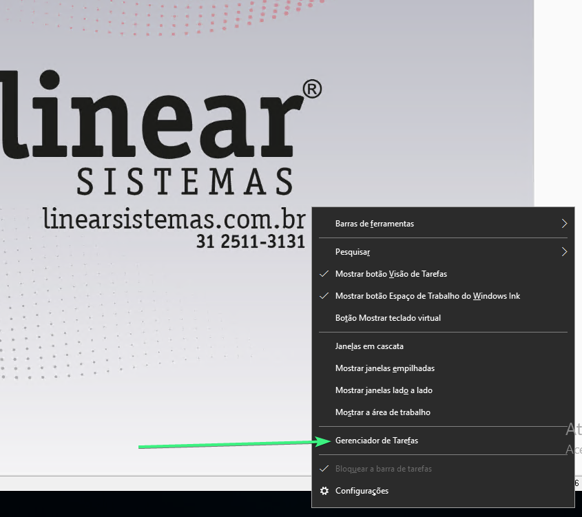
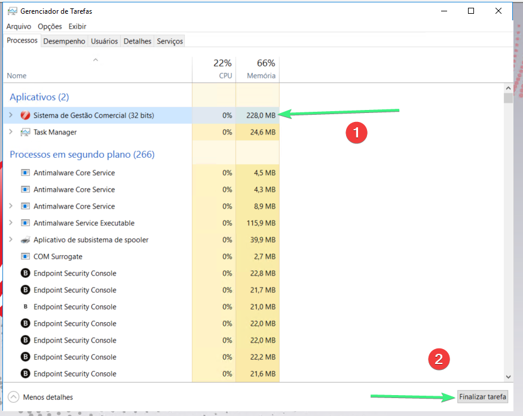
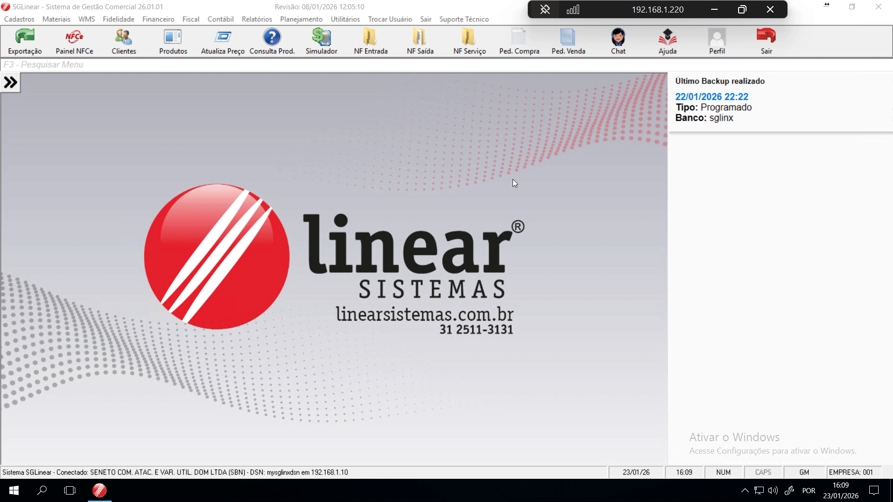
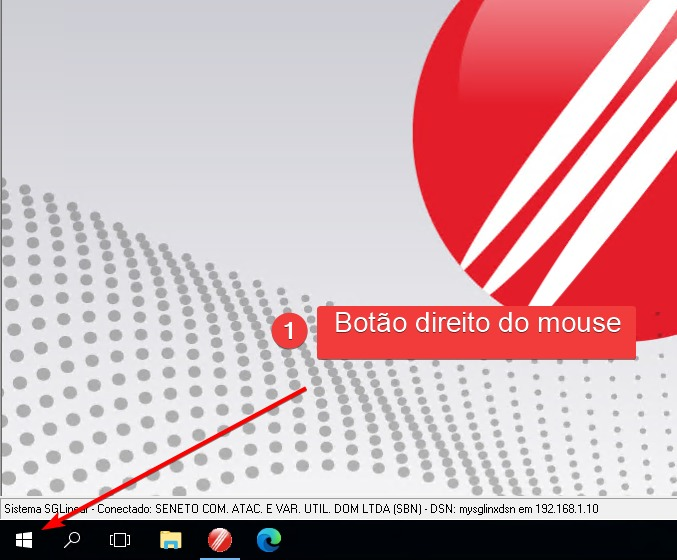
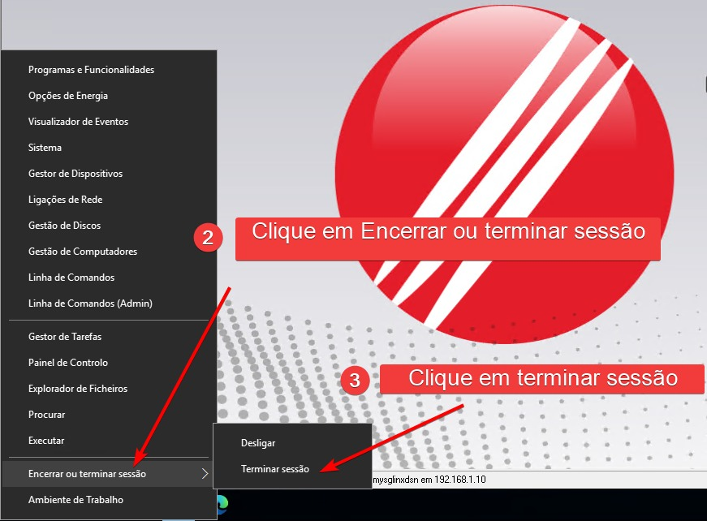
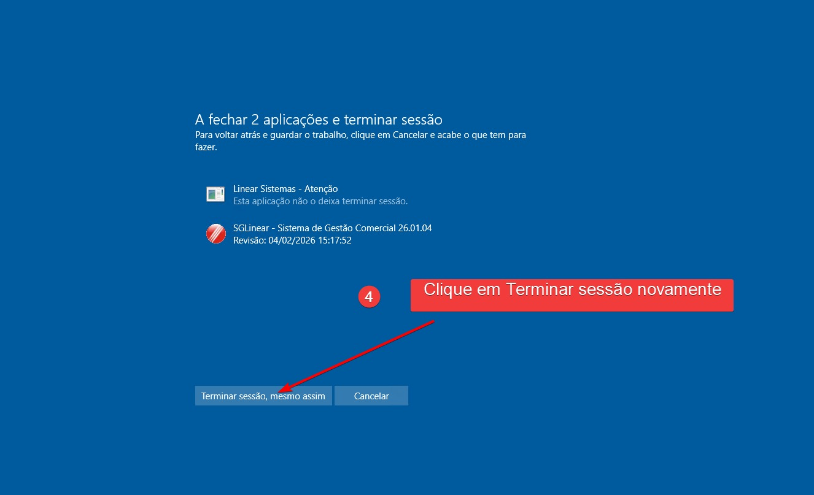
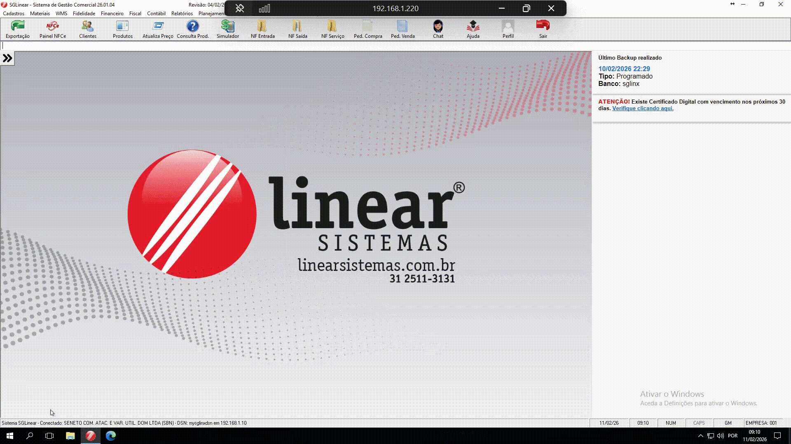

PDV não imprime cupom ou está com Lendidão
Passo a Passo para resolver:
- Passo 1: Verifique se a $3net0@2024.
- Passo 2: Selecione Gestor de Tarefas.
- Passo 3: Encontre e selecione o aplicativo do linear(Sistema de gestão comercial).
- Passo 4: Clique em finalizar tarefa na barra inferior.



Você pode também reiniciar sua conexão com o servidor:
- Passo 1: Clique com o Botão direito encima do icone do windows.
- Passo 2: Selecione Encerrar ou Terminar Sessão.
- Passo 3: Clique em terminar sessão.
- Passo 4: Clique em terminar sessão novamente.




Nota: Se após esses testes não Resolver, abra um chamado técnico informando o que já foi feito no Grupo do TI.